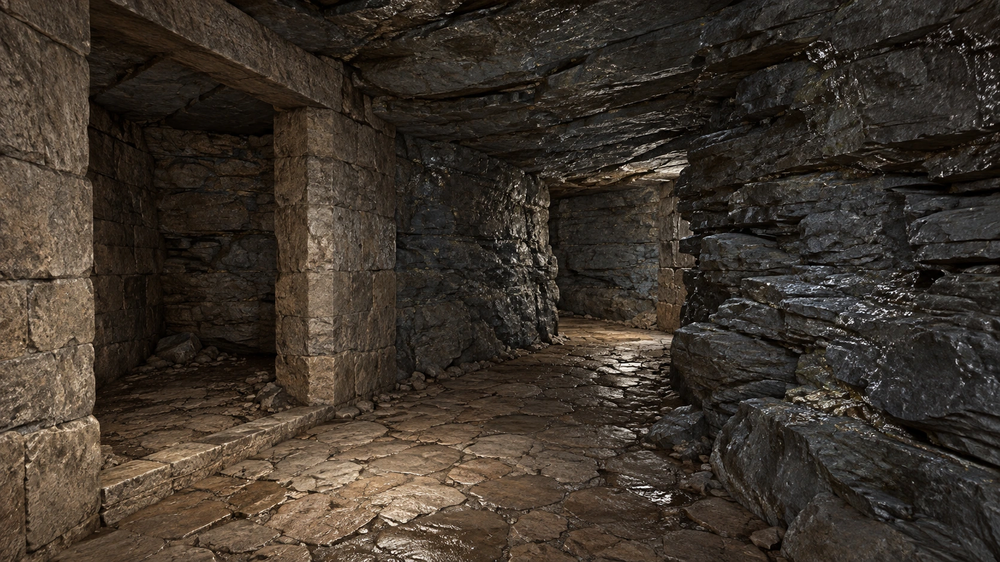

KONSEPT VE BÖLÜM TASARIMI
Yeraltı
konseptleri.
Beş bölüm için mimari, geçiş ve oynanış çalışmaları.
Konseptler, planlar ve etkileşimli mekanik anlatımı.
Yapay zekâ destekli tasarım önerileri. Oyun içi görüntü değildir.
Yapay zekâ destekli tasarım önerileri.
Oyun içi görüntü değildir.
Her bölümde farklı mimari, oyuncu eylemi ve geçiş önerileri bulunuyor.
Tarihsel yapı referanslarını aç ↗01 / GÖRSEL ATLAS
Konsept galerisi
Beş resimli karttan birini seç.
Ardından mimari, oynanış veya mekanik görsellerine geç.
Her kart ayrı bir galeriyi açar
Bu görselin kaynak ve doğruluk sınırı
Görüntü üretimi mimari/oynanış önerisidir. Gerçek Unreal materyali, animasyon veya performans testi değildir.
Konsept görselini aç ↗02 / MİMARİ ÇİZİMLER
Planlar ve kesitler
Aşağıdaki yedi düğmeden bir çizim seç.
Çizime tıklayarak ölçüleri tam boy incele.
03 / MİMARİ PLAN
Rota ve bağlantılar
Renkli çizgiler ilk ilerleme, kesik çizgiler sonradan açılan kuru dönüşler.
Çizgiler önerilen rota eksenleridir. Kareler10m. Aşama numarasına basarak o bölümün görsellerine git.
Kotlar ve suyun sınırı
Bodrum tabanı0m kabulü. Kesit düşey ölçüyü açıklar; arazi ölçümü değildir.
04 / ÇALIŞMA MANTIĞI
Mekanikler ve durumlar
Bir bölüm seçerek o bölümün
üç adımlı mekanik anlatımını aç.
HAZNE · DURUM DENEMESİ
Su seviyesini değiştir.
Çubuğu sürükle; suyun ve çıkışa erişimin nasıl değiştiğini gör.
Su seviyesi ve nefes hesabının sınırları
Nefes ancak baş su üstüne çıktığında ve üzerinde gerçek hava boşluğu bulunduğunda yenilenir. Kayanın altındaki sualtı geçişi hava cebi değildir. Süre ve güvenli açıklık gerçek karakterle ölçülecek.
05 / KAYNAKLAR VE ÜRETİM
Kaynaklar ve üretim
Önizleme, oyunda çalışan model ve materyal kabulü anlamına gelmez.
Kaynak modellerin önizlemeleri yeniden yayımlanmıyor. Ürün sayfaları aşağıdaki bağlantılardan incelenebilir; ürünün listelenmesi, nihai sahnenin hazır olduğu anlamına gelmez.
Animasyon ve üretim yükü
Mevcut kütüphane ve altyapı başlangıç sağlar. Ek üretim ihtiyacı, süre ve oyun içi maliyet uygulamada doğrulanacak.
Uygulamaya girmeden çözülmesi gereken somut koşullar
Tarihsel dayanaklar
İşlevler ayrı yapılardan alındı; tek bir belgelenmiş gizli kompleks gibi birleştirilmedi.